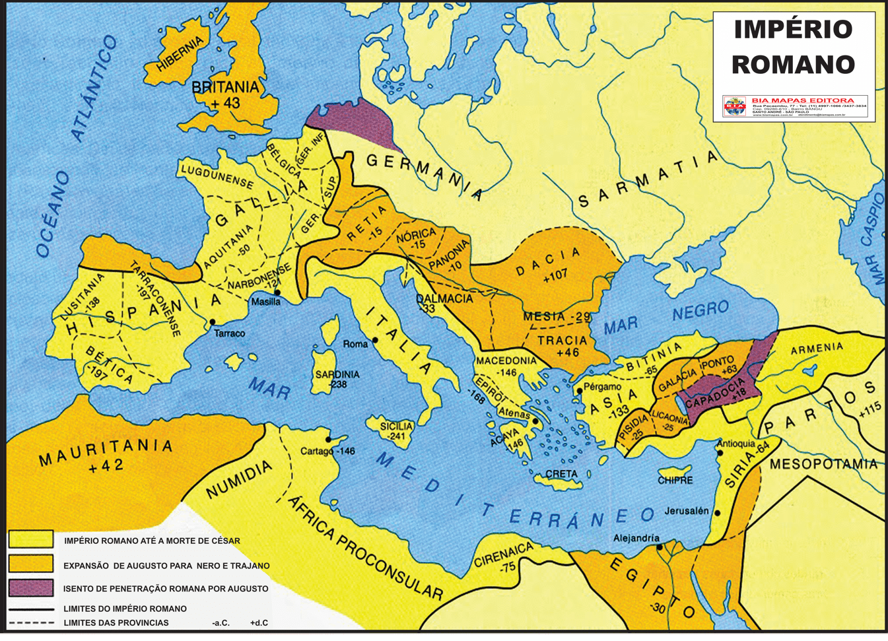

Latim Vulgar e Literário
O latim vulgar e o latim literário representavam duas formas distintas da língua latina, uma falada no cotidiano e a outra usada na escrita formal. O latim vulgar evoluiu para as línguas românicas modernas, enquanto o latim literário permaneceu como a forma oficial e conservadora de escrita. A colonização romana teve um papel crucial na disseminação do latim, pois os povos dominados eram gradualmente romanizados. Oficiais, funcionários e comerciantes romanos se estabeleciam nos centros urbanos das regiões conquistadas, promovendo o uso do latim. O prestígio da civilização romana e o interesse em ascender socialmente levaram as classes mais elevadas desses povos a adotarem o latim, enviando seus filhos às escolas romanas para facilitar suas carreiras. O latim também se espalhou para as áreas rurais, já que estas dependiam dos centros urbanos.
A cultura dos povos conquistados foi profundamente influenciada pela civilização romana, incluindo suas crenças religiosas, que foram associadas aos deuses romanos. As províncias onde o latim se manteve são hoje conhecidas como os países românicos ou a România. O latim vulgar era a língua falada no cotidiano, enquanto o latim literário era usado em contextos mais formais e públicos. Importantes escritores, como Cícero e Virgílio, usavam o latim literário, que era muito mais elaborado e distante da linguagem comum. Este tipo de latim serviu de base para as diferentes línguas românicas, evoluindo a partir do latim falado, não do literário.
|
O latim vulgar foi influenciado pelas línguas dos povos dominados, que deixaram vestígios no latim falado. Algumas palavras dessas línguas foram conservadas, seja pela profundidade de suas raízes ou pela falta de equivalentes em latim. Durante o Império Romano, a comunicação entre as diferentes províncias evitou uma separação linguística completa. Após a queda do Império, as comunicações se tornaram mais difíceis e raras, levando ao isolamento das regiões e ao desenvolvimento de suas próprias variantes linguísticas. Enquanto isso, a cultura literária, que poderia servir como um vínculo, também estava em decadência.
|
|
A língua literária permaneceu extremamente conservadora na Antiguidade, pois se considerava que o Belo era um modelo estável e perfeito que não deveria ser alterado. Contudo, mesmo o latim literário sofreu algumas mudanças ao longo dos séculos, embora de forma menos significativa do que o latim vulgar. As diferenças entre o latim vulgar e o literário são notáveis. O latim literário, com seu rigor e polidez, era muito mais estático, enquanto o latim vulgar era dinâmico e em constante evolução, adaptando-se às necessidades do dia a dia.
O latim poderia ser classificado em três formas principais: o latim literário clássico, imitado pelos humanistas da Renascença; o latim literário do declínio da civilização antiga e da Idade Média, conhecido como baixo latim ou latim da Igreja; e o latim vulgar, que foi a base das línguas românicas. No latim vulgar, a influência das línguas de substrato dos povos dominados era evidente. Estas línguas deixaram traços no latim, que continuou a evoluir mesmo após a queda do Império Romano.
A romanização da Península Ibérica exemplifica bem essa dinâmica. Estudos mostram que o latim dialetal, em contato com outras línguas naturais do território romano, resultou nas línguas românicas. As várias teorias sobre a origem do latim indicam sua ligação com a língua indo-europeia. A evolução política de Roma e seu contato com o grego poliram o latim, que se fixou como uma língua literária. O latim vulgar, no entanto, continuou a transformar-se, impondo-se nas regiões conquistadas em relação às línguas locais.
|

|
Após a queda do poder centralizador romano, os dialetos começaram a predominar, e as pessoas usavam cada vez mais suas próprias línguas, com o latim desaparecendo como língua falada no século XII. A reforma cluniacense contribuiu para a abolição da forma escrita do latim vulgar na França e em Portugal.
O latim vulgar apresentava características específicas, como a sonorização das oclusivas surdas, a queda de consoantes intervocálicas e a vocalização de certas consoantes.
|
A gramática comparada das línguas românicas confirma que o latim falado nos últimos séculos do Império Romano era substancialmente diferente do latim clássico. O latim vulgar é conhecido principalmente pelas anomalias na escrita, referências de gramáticos e comparações entre as línguas românicas.
A diversidade do latim vulgar era notável, variando regionalmente e ao longo do tempo. Diferentes estilos e níveis de linguagem eram usados por comunidades específicas, como as cristãs e as militares. O estudo dessas variantes do latim proporciona uma compreensão mais profunda da evolução das línguas europeias e da história linguística do continente.